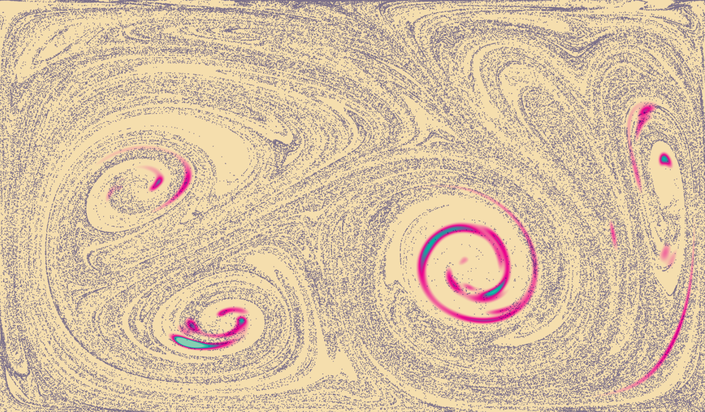

Fluid Simulation Shader
This simulation solves the
Navier-Stokes equations for incompressible fluids in a GPU fragment shader.
I implemented
no-slip boundary conditions at the borders to keep the fluid contained within the bounds of the screen.
To increase performance, I solved for the velocity vector field of the fluid at a lower resolution than I used to compute the visualization of fluid flow; I used bilinear interpolation to smooth out artifacts caused by this speedup.
I've also added 160,000
Lagrangian particles on top of the simulation -
these particles are rendered using
threejs, but their positions are computed on the GPU.
Instructions: Click and drag to apply a force to the fluid. Over time, the colored material in the fluid will dissipate:

To learn more about the math involved, check out the following sources:
Real-time ink simulation using a grid-particle method - mixing Eulerian and Lagrangian techniques for fluids
Fast Fluid Dynamics Simulation on the GPU - a very well written tutorial about programming the Navier-Stokes equations on a GPU.
Though not WebGL specific, it was still very useful.
Fluid Simulation (with WebGL demo) - this article has some nice, interactive graphics that helped me debug my code.
Stable Fluids - a paper about stable numerical methods for evaluating Navier-Stokes on a discrete grid.
By
Amanda Ghassaei, code on
Github.